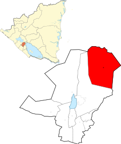

QUIÉNES SOMOS
Después de 35 años de plantar y pastorear cuatro iglesias en Estados Unidos, el Señor ha llamado al Dr. Paul Tipton y su esposa, Gail, al país de Nicaragua, donde están entrenando pastores nacionales y ayudándolos a plantar iglesias bautistas independientes. En el momento de escribir este artículo han comenzado 6 iglesias. El pastor Tipton fundó la Iglesia Bautista Riverview en 1991 y fue pastor durante 25 años.
